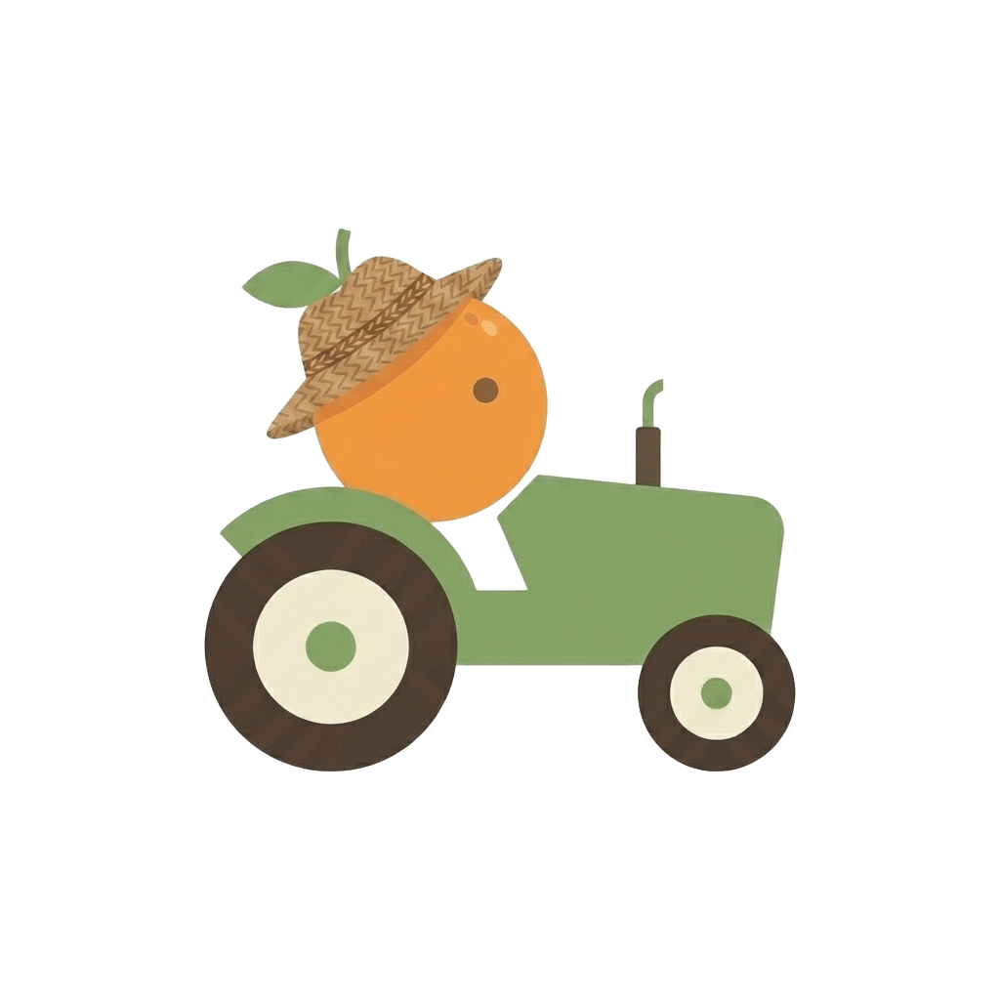

Um ecossistema para o dia a dia
A simpler life, naturally.
Uma vida mais simples e saudável — fácil como descascar uma laranja.
Conhecer as aplicações
O projeto
Pequenas ferramentas para grandes rotinas.
Orenji é um projeto de aplicações pensadas para tornar tarefas do quotidiano mais claras, leves e fáceis de acompanhar.
O ecossistema
Escolhe o que te ajuda hoje.
Explora cada aplicação. Abre um card para saber mais.
Novidades
Estamos a preparar o próximo capítulo.
Ainda não há novidades para anunciar, mas elas chegam em breve.